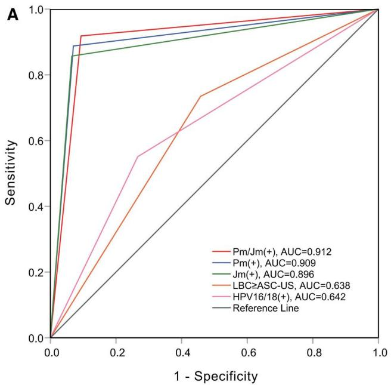
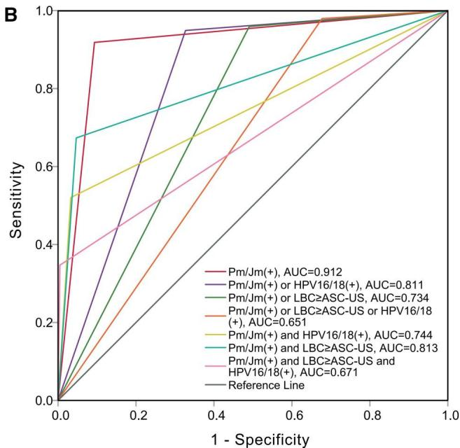
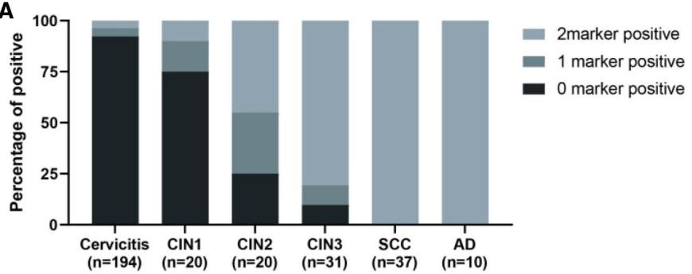

1Background & Objective
- Problem: hrHPV+ has high false-positive rate → psychological burden, overdiagnosis & overtreatment.
- Cytology limits: suboptimal Se/Sp; affected by sample quality & reader expertise.
- Objective: evaluate PAX1m/JAM3m as triage for hrHPV+ individuals vs cytology & HPV16/18.
2Study Design & Cohort
312
hrHPV+ patients
2024–25
screening period
1
center
- Assays: cervical secretions — PAX1m/JAM3m qPCR + cytology + HPV genotyping.
- Reference: histopathology; CIN2+ endpoint.
- Ethics: Ziyang Central Hospital (No. 2023331).
3ROC Curves

Fig. 2A ROC — PAX1m/JAM3m best for CIN2+.

Fig. 2B Combined methods — methylation wins over combos.
0.912
Pm/Jm CIN2+
>
cytology
>
HPV16/18
>
combinations
- Standalone: dual-gene methylation alone beats every single test & combination.
4Methylation Rises With Severity

Fig. 1A Positivity increases with grade (P<.001 trend).
Fig. Dual-gene positivity rises with severity — strongest in cancer.
- Trend: dual-gene positivity rises from normal/CIN1 to CIN3 & cancer.
5Diagnostic Performance — CIN2+
| Method | Se % | Sp % | AUC |
|---|---|---|---|
| PAX1m/JAM3m | 91.8 | 90.7 | 0.912 |
| Cytology ≥ASC-US | — | — | lower |
| HPV16/18(+) | — | — | lower |
Methylation outperforms cytology, HPV16/18 genotyping & their combinations.
6Referral Efficiency
- 1.22 referrals / CIN2+ — efficient colposcopy triage.
- Detection +39.4%: CIN2+ detection rate vs cytology ≥ASC-US.
- Non-16/18: PAX1m/JAM3m(+) → CIN3+ risk 39.1%; (−) → 0.9%.
- Resource-fit: objective qPCR suits resource-constrained settings.
Methylation triage — fewer referrals without missing high-grade lesions.